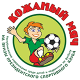

В 1964 году состоялись первые детско-юношеские соревнования по футболу, ставшие самыми массовыми за всю историю игры. Уже в дебютном розыгрыше турнира за победу боролись 50 тысяч дружин: почти миллион юных футболистов со всего Советского Союза. Для многих ребят клуб стал школой большого футбола. Как и большинство подобных соревнований, с распадом Союза «Кожаный мяч» временно прекратил свое существование. На территории Беларуси турнир вновь возродился в 1997 году. С тех пор его популярность в нашей стране с каждым годом только возрастает.
Ежегодно в финалах турнира встречаются сильнейшие команды Беларуси. Это настоящий футбольный праздник для всех его участников.